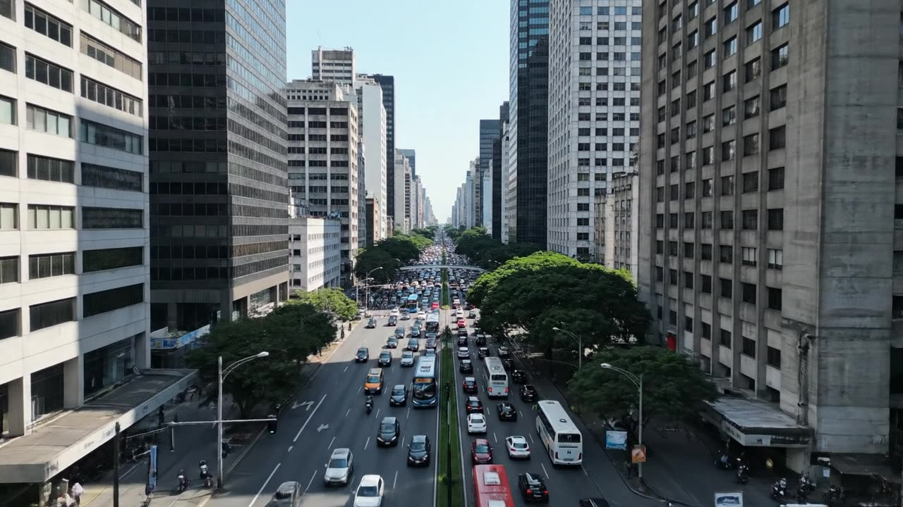

Simulador: o que muda quando o semáforo se adapta
Ligue o SmartFlow, compare o atraso em cada corredor e calcule quantas horas você recupera por ano.
Dados ilustrativos. Os valores desta página servem para demonstrar a simulação. Não são medições oficiais. Números reais dependem de um piloto com a CET.
Corredores de São Paulo
| Corredor | Região | Atraso por viagem hoje | Atraso com o SmartFlow | Redução |
|---|
Meu trajeto
Escolha a avenida que você mais usa e veja o efeito no seu ano.

Ônibus e carros dividem as mesmas avenidas e os mesmos semáforos.